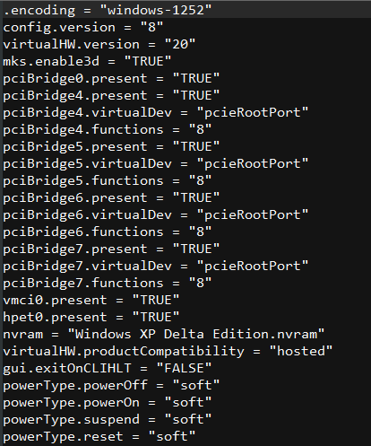

You need to reinstall your operating system on your virtual machine, or you need to get into your BIOS, but when you try to, the POST is too quick and you don't get a proper chance to get into it!
First, locate your virtual Machine's file location. To do this in VMWare Workstation Pro, Click on the virtual machine so it's info tab opens, Like this:
Click on "Edit Virtual Machine Settings", Then go to Options and in the General tab, you will see a box that says: Working Directory, Like This:
On Workstation Player, it's similar.
After making a mental note of where it is, navigate to it, alternatively, if you have something like Everything installed, simply search the name of the virtual Machine.
After going to the virtual machine's folders, you will see several files. The machine's configuration is stored in a file with the extension of .vmx
Make sure VMWare is closed before editing these files/
Right Click on the file, then click "Edit", Depending on your operating system and installed programs, it might look different. For example, Run Windows 11 and have Notepad++ Installed instead of normal Notepad.
Now, when we open it in our editor, we will see a bunch of settings. You should see something like this:
We need to add a new line to it, bios.bootDelay = "xxxx" , remember to replace XXXX With a number in Miliseconds, with a maximum of 10 Seconds (10000, in this case.) If you want 5 seconds, type 5000
Once this has been added, save the file and boot the VM again, you should see that the operating system doesn't begin booting until the countdown is finished.